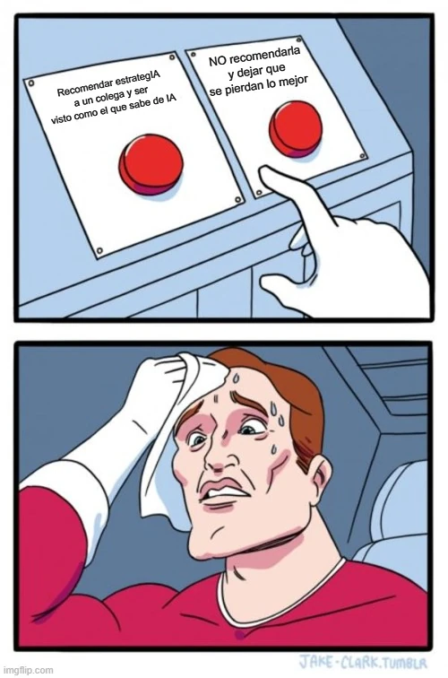

estrategIA #53 ·
El dilema de recomendar estrategIA
El contexto
El primer aniversario de la newsletter se celebra con una broma dirigida a sus lectores. Los dos botones contraponen compartir el hallazgo con un colega y guardárselo, mientras el personaje convierte una recomendación sencilla en una decisión angustiosa.
Publicado en: estrategIA #53: Un año de estrategIA: celebramos nuestro primer aniversario entrenando debates con la voz avanzada de ChatGPT
Leer el texto de la imagen
Recomendar estrategIA a un colega y ser visto como el que sabe de IA NO recomendarla y dejar que se pierdan lo mejor
Créditos visibles de la plantilla: JAKE-CLARK.TUMBLR e imgflip.com.